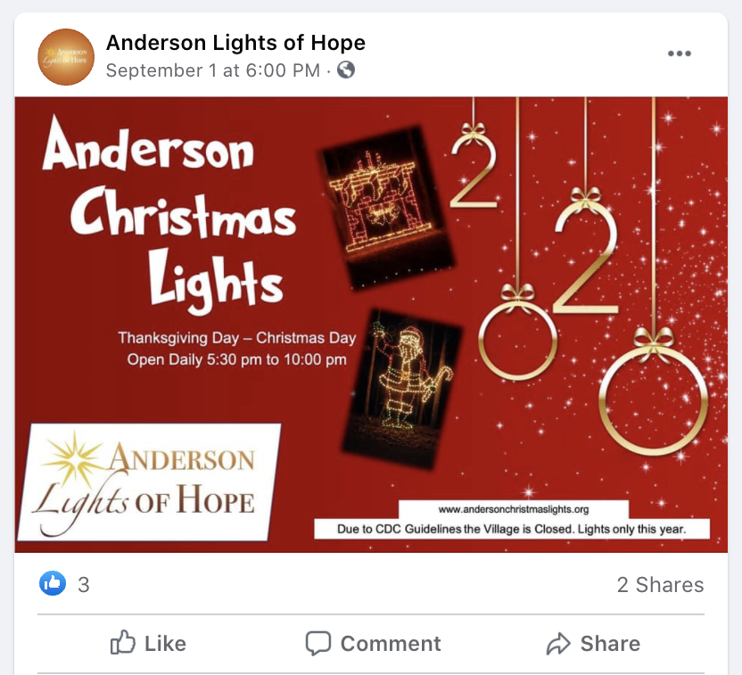
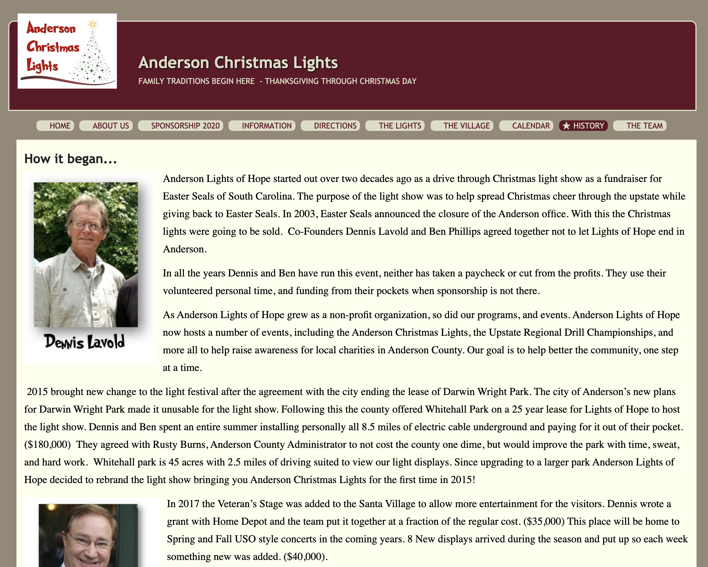
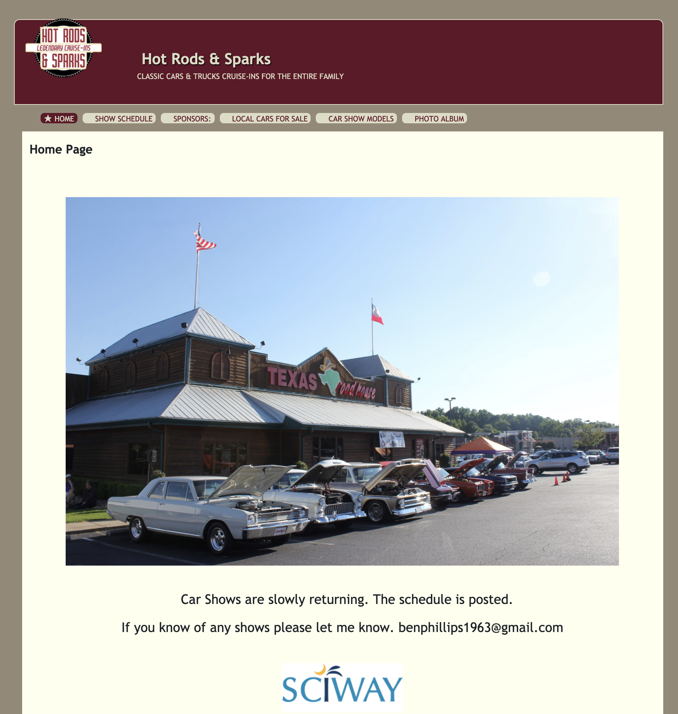
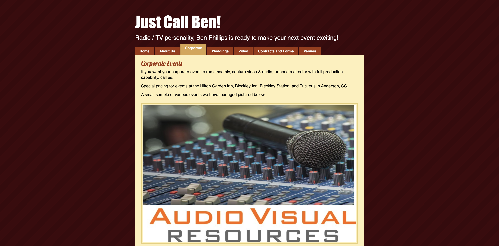
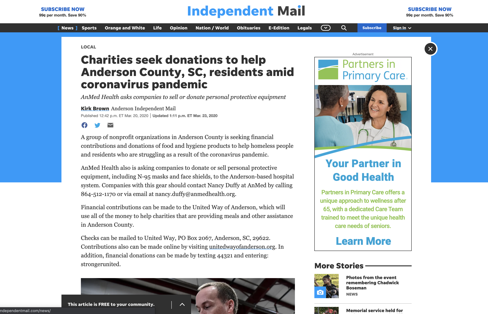
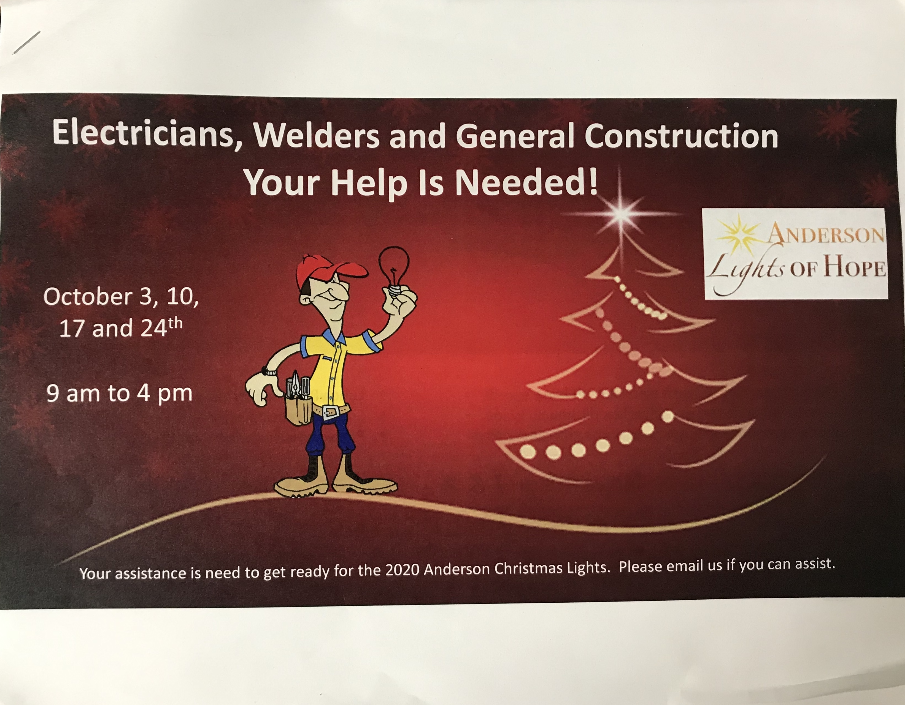
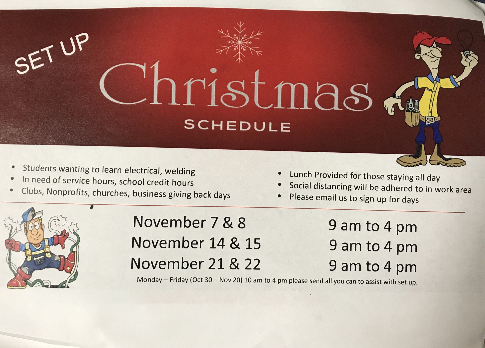
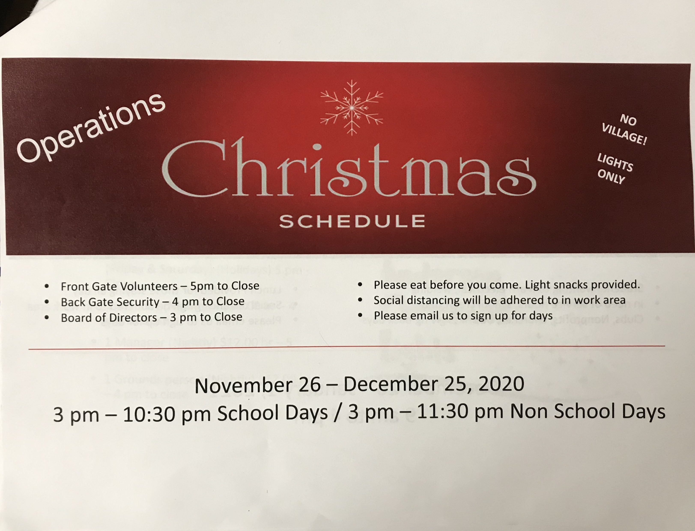

Research
Anderson Lights of Hope
Primary Research
Mission
The ‘Our Mission’ page on andersonlightsofhope.org goes into detail about what Anderson Lights of Hope is all about. They’re a non-profit organization with a purpose that promotes a number of ideals—including support for disabled and disadvantaged individuals and training/education for individuals to further their career and positively influence their community. They may also provide volunteer or internship opportunities for people in their events as well as collaborating with other non-profits in order to create a bigger impact.
Events
ALOH has three main events that they include on this website:
- “The Anderson Christmas Lights” is exactly what it sounds like. This event is a drive-thru light show that runs every year from Thanksgiving to Christmas.
- “Hot Rods & Sparks” is a Car, Truck and Motorcycle show for the enjoyment of all ages. Vendors, food, and entertainment are a norm for this event.
- “Upstate Regional Drill Championship” is the Upstate’s premier JROTC regulation and exhibition drill competition. Schools from all over the southeast can participate and even win a cash prize.
Productions
“ALOH Productions” is a service provided by Lights of Hope for smaller businesses who might not be able to afford large productions for advertising. They can provide photography, print material, and even video advertising for their clients in a more affordable manner.

Another Website?
Upon further investigation into what exactly ALOH Productions entails, I discovered a completely different ALOH website, but one that had the same general skeleton of the main one. They both seem to serve the same purpose, but one of the biggest differences is the copyright year at the bottom, with the second website being updated in 2020 (the primary website's date is 2015). Bizarrely enough, all the links on other websites that lead to ALOH will pull up the seemingly outdated version of the website.
The website unfortunately seems outdated, as some events are dated as happening “this year” but it still says 2017 or 2018. However, they’re more up to date on their Facebook page. Their more recent posts refer to:
- A recent donation by ALOH to United Way of Anderson County, showing a willingness to collaborate with other non-profits in order to make a bigger impact.
- An announcement for the 2020 Christmas lightshow which will be drive-thru only and not include the walk-around section of the Christmas Village (due to COVID-19)
- A post in January advertising the Upstate drill competition in March 2020.

Anderson Christmas Light Show
- A completely separate website, detailing what the light show is and what goes on there. There’s info on sponsors and a calendar for events, although it seems outdated (Dec 2019). There’s also a rather informative ‘History’ tab, giving insight on the founding of ALOH and what their goals are. There’s also a different Anderson Christmas Lights website which is not decorative and simply contains info on contacts, calendars, and more.

Hot Rods & Sparks
HRS news seems to be communicated mainly through Facebook—where they have upcoming events listed, the latest one being “Cruise for Christ” on September 26. HRS also has its own website, which includes a schedule for shows, as well as photos from the events.

Upstate Regional Drill Championships
This event has its own website as well, including a schedule, photos, information, etc. However, it seems they also communicate mostly through Facebook, with photos and updates of events.
ALOH Productions
This section of ALOH also has its own website, detailing some of the events and types of media they cover. Although it almost seems to be its own entity, being called “Just Call Ben” (referring to one of the initial founders of ALOH: Ben Philips).

Summary
From what I’ve been able to gather, it seems that ALOH and its events relay their news mostly through Facebook, and the websites seem to be more of an afterthought. Today, their impact mainly effects the local community of Anderson and even sometimes other surrounding counties. Through their events, which provide affordable entertainment and fun for all who wish to join, they can also provide opportunities for volunteers or internships. It seems that whatever money they accumulate is either given straight back into the budget for the next event or donated to another non-profit organization to give back to the community.
The biggest thing holding them back is their inability to effectively communicate information through the web. The mere fact that all the info about them and their events is essentially spread across seven different websites speaks volumes about how disjointed their online presence currently is, and it has room for improvement, unquestionably.
Secondary Research
Recent News
The specific field of ALOH was somewhat difficult to pin down, but I felt that they best fit the niche of simply being a part of the local Anderson community. I decided to look at recent events regarding the Anderson community and other nonprofits and found that, in 2020, the pandemic seems to be a dominant theme (no surprise there). One article I found shows that United Way of Anderson is taking donations to support other Anderson nonprofits who may be struggling with the pandemic. This article directly correlates to the previously-shown Facebook post of ALOH donating $500 to United Way of Anderson—demonstrating their big strength of offering support to other nonprofits in the Anderson community.

Inspiring Solutions
Keeping the focus primarily on the community of Anderson county, I wanted to see what other nonprofits were doing on their websites in order to draw volunteers. Two of the most well-known nonprofits of Anderson—Habitat for Humanity & Haven of Rest—also rely on volunteers for much of their efforts. Both of these websites feature elements that greatly improve user experience and could go a long way if applied to a website like ALOH, like big action buttons for volunteering or donating, or even just a clear-cut explanation of what the organization is all about.
Financial Condition
A page about the Anderson Christmas Lights can be found on alignable.com and gives more insight on the state of the light show and shows a need for sponsorship. Though the pandemic is unfortunate, they’re pushing through with the light show, and this could be another opportunity to effectively use a website for supporting the cause.
Interviews
On September 24, 2020, I was invited to join the ALOH team meeting at El Patron of all places. The beginning was pretty standard, as it just involved Ben Phillips talking to everyone about how the Christmas light show was going to run this year in the context of COVID-19. Daniel (who joined me for moral support) and I just sat and listened for this portion, and it became clear to me that the ALOH team was facing some adversity (much like everyone else) during 2020, so I kept that in mind. Ben also prepared some handouts so everyone could understand the schedule and vision for the 2020 Christmas season; here’s a few pages:
Dennis Lavold
After a while, the meeting devolved into multiple conversations happening across the table. The man in front of me was none other than Dennis Lavold, the other founder of the Anderson Christmas Lights (the event, not ALOH). I’d initially planned to just interview Ben, but since I was in that position, I decided to ask Dennis some questions too. Dennis is a very kind senior citizen who’s responsible for the more technical side of things in the light show (he’s the head of the manual labor, essentially). He basically just gave details on the Christmas light show and what all went on there, how they get the lights, etc. It was interesting info, but I definitely got to the meat of what I was looking for when I got to interview Ben.
Ben Phillips
Ben’s interview ran longer than expected, so I’ve divided it up into chunks based on what questions I asked, and I’ll just give a brief summary of what was said. Ben’s interview ran longer than expected, so I’ve divided it up into chunks based on what questions I asked, and I’ll just give a brief summary of what was said.
What is Anderson Lights of Hope? What’s the mission?
Ben answered this by stating simply that ALOH is a non-profit that helps children and adults with disabilities. He also was very intentional about raising the question to me of what exactly “disabled” means. He pointed out that many of us just picture “handicapped” when we think disabled, but he clarified that his definition of disabled would involve anyone who’s unable to do something essential for living, like a homeless made who is unable to afford a home or food. It’s an interesting perspective that I hadn’t heard before, but it just reinforced that ALOH is all about helping those who are in need, essentially. The way they do this is through the events they put on, where all the money raised, used to pay off whatever bills are needed for the show to run again, and then all excess funds are given back to other charities/non-profits. Absolutely $0 goes to Ben and Dennis and it’s all simply for the betterment of the Anderson community. Unfortunately, Ben never mentioned specifically who/what charities they give the money to, so I may have to email him for that detail; although there was a representative from Habitat for Humanity at the meeting, so it seems like a tight-woven community.
What events are held under ALOH?
At this point, Ben confirmed that the Anderson Christmas Lights is not the same as Anderson Lights of Hope. ACL is the event hosted by the non-profit ALOH. So, this applies to the Hot Rods & Sparks and Upstate Drill Competition as well. According to Ben, he’s not really the one in charge of those other events; they’re simply hosted under ALOH, so the same financial rules apply to them as well.
Is there a specific target audience for ALOH?
For this question, Ben went on a whole spiel about how he has to try to target different races. Not exactly what I asked for, but it was very helpful for showing how the audience of ALOH events usually ends up being comprised of Caucasian families. Beyond that statement, Ben mentioned that the demographic they typically try to attract are parents and grandparents, as they’re the ones who can drive their family over to the events. There’s typically something for everyone at the light show and even the car show, especially for kids.
Another interesting detail came when Ben told me that he did not market to anyone in the Anderson community. At first, that seemed backwards to me, but it actually makes complete sense. People in Anderson have known about ALOH for years, so if they want to come, they will. But outsiders (typically those within a 50-mile radius) are the ones most marketed to, as they might not get to go to the events very often or know that the events exist in the first place. And apparently this works, because according to Ben, a majority of people that come to the Anderson Christmas Lights event aren’t even from Anderson.
Hypothetically, if you were to rework ALOH’s website, what would it be like?
Here, Ben addressed the issue of all the events being spread across different sites, so he’d like to see a “one-stop shop” of all the ALOH events and a functional calendar just to make things easier. He also mentioned how it’d be cool if there were a function that let kids email letters to Santa for the ACL event (as Santa normally attends that) and a function that let him know about where in the world people are visiting the site from. Here, Ben addressed the issue of all the events being spread across different sites, so he’d like to see a “one-stop shop” of all the ALOH events and a functional calendar just to make things easier. He also mentioned how it’d be cool if there were a function that let kids email letters to Santa for the ACL event (as Santa normally attends that) and a function that let him know about where in the world people are visiting the site from.
Interestingly, Ben said that he’s actually the one who made the current website(s). So, the fact that they don’t necessarily match his vision may simply have something to do with a lack of knowledge for website building.
User Interview
After my interviews with Dennis and Ben, I figured the best example of users of ALOH’s website would be parents that lived in the Anderson area—just like MY parents. So, I interviewed my parents, who did say that they could definitely see themselves using the ALOH website. I kept these interviews simple and just asked two questions; here’s a summary of their collective answers:
Why would you visit ALOH's website?
- Learn about what their mission is
- What the money's raised for/how it's used
- Why I should donate to ALOH
- Get info on events
As the website exists now, what changes do you think would improve your experience?
- All-in-one experience on a single website
- Photos of events/people who have been helped
- Calendar of events
Summary of Interviews
Overall, I gleaned a lot of good information from these interviews, and I think a lot of my design choices have been clearly laid out for me. There’s still a few loose details that will need some extra research to solve—like what particular charities benefit from ALOH—but overall, a lot of what was said during the ALOH interview will inform my design choices for the new website, and my parents’ interview further cemented those ideas I already had.